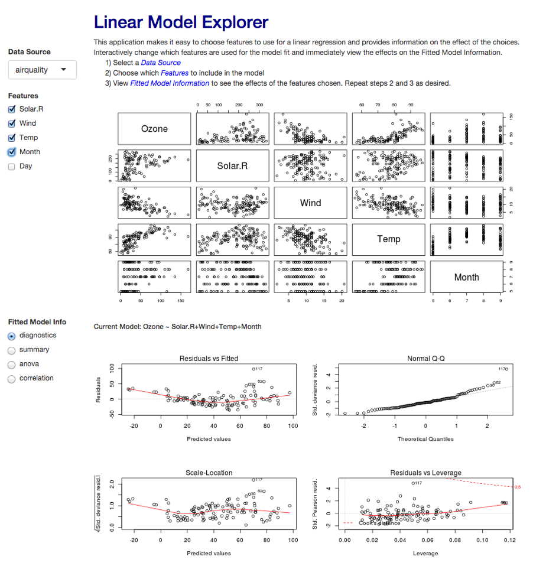

- Simple dashboard to explore linear regression.
- Selectable datasets for exploration
- Responsive feedback to changes in selected dataset features.
- Responsive updates to model information.
- Four diagnostic plots for model fit
- Summary information about the model
- Analysis of variance (anova) for the model
- Correlation information for selected features